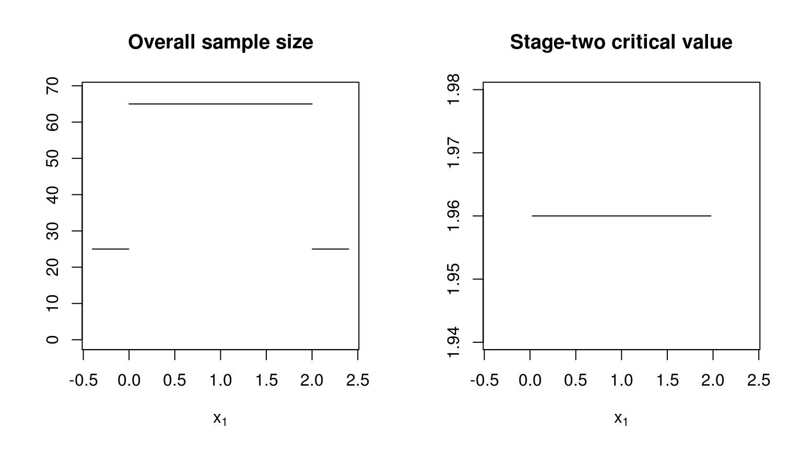

The core problem
adoptr addresses the problem of finding optimal two-stage designs for clinical trials. Currently, only (asymptotically) normal test statistics are supported. Both Z-tests for a single arm versus a fixed value or one-sided tests comparing the means of two arms are supported. In all cases known variance is assumed and in the two-arm case homogeneity of variances is required, additionally.
Consider the simplest case of a two-stage design for a single-arm trial aiming to reject the null hypothesis that \(\delta\leq 0\) where \(\delta\) is the mean of the population response. Further assume that a power of 80% at \(\delta=0.4\) and a type one error rate of 5% on the boundary of the null hypothesis is required (\(\delta=0.0\)).
We can start with a a more or less arbitrary initial design [ToDo: can we start with a single stage design fulfilling the power and type one error rate constraints here?]. adoptr internally represents designs as tuples of \((n_1, c_{1f}, c_{1f}, n_2(\cdot), c_2(\cdot))\). Here, \(n_2\) and \(c_2\) are the functions returning the stage-two sample size and critical values given the stage-one test statitic \(x_1\) (z-score in our case). For any given objective function, the design parameters can be identified via a variational problem. To numerically solve this problem \(n_2\) and \(c_2\) are integrated using a Gaussian quadrature rule. The order of the rule determines the number of pivot points for both functions. Since, both \(n_2\) and \(c_2\) are usually fairly smooth on the continuation region, a quadrature rule of order 5 is sufficiently flexible:
The initial design may then be defined as follows:
[comment: I don’t like the gq_design function. If we only use GQ, we should implement this as default constructor of the TwoStageDesign class even though the implementation is more generic.] The design can be visualized using the provided plot() method.

In the next step, we define a simple optimization problem for improving this initial design.
Define hypotheses and data-generating mechanism
First, we define the null and alternative hypotheses as prior distributions over the unknown \(\delta\).
Next, we define the data-generating mechanism. Currently, only normally distributed test statistics with known variance are supported. For medium to large sample sizes, the assumption of known variance introduces little error even if the true distribution is, e.g., a t-distribution due to estimation of the unknown variance. Here we simply define a normal-model. The default is a two-arm trial, but for the sake of simplicity, we consider a single-arm trial first.
Note that when using two-armed designs, all sample sizes are given per-arm!
Define scores
To define the optimization problem we specify a few quantities of interest. The overall objective could, e.g., be to minimize the expected sample size of the design under the alternative hypothesis subject to the given power and type one error rate constraints. Let to this end
be the expected sample size under the alternative. Note that the ess object is created by integrating a simple, conditional score - the conditional sample size given \(X_1 = x_1\) is just \(n_1 + n_2(x_1)\) and pre-implemented.
Similarly, we can define the power and type one error rate by integrating conditional power with respect to the alternative or null hypothesis respectively:
Optimize the design
We can now proceed with defining and solving the optimization problem. Before doing so, we need to define box-constraints by providing a lower and upper boundary design.
lb_design <- update(
design, c(10, -1, 1, numeric(order) + 2, numeric(order) - 5)
)
ub_design <- update(
design, c(50, 1, 4, numeric(order) + 50, numeric(order) + 5)
)optimal_result <- minimize(
ess,
subject_to(
power >= 0.8,
toer <= .05
),
initial_design = design,
lower_boundary_design = lb_design,
upper_boundary_design = ub_design
)
optimal_design <- optimal_result$designHere, we override the internal defaults to allow a more precise solution. Note that since COBYLA is a generic derivative-free optimizer, the process may take quite a while. In general it is important to check convergence since partial solutions might be non-smooth or otherwise non-intuitive. If the algorithm would not have converged, the function minimize would have thrown a warning message. All the output that was created by nloptr can be regarded by
The resulting optimized design may again be plotted together with its conditional power.
plot(
optimal_design,
"Conditional power" = ConditionalPower(datadist, alternative),
"Conditional TOER" = ConditionalPower(datadist, null)
)
This class of designs was previously discussed in [SIM article] where an indirect method solving the Euler-Lagrange equation was used to find the optimal \(n_2\) and \(c_2\) functions.